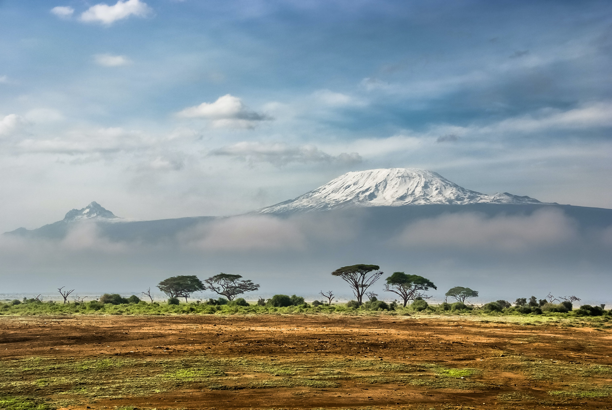

Intro
Welcome to my blog about Tanzania! This beautiful East African country is known for its stunning landscapes, vibrant culture, and diverse wildlife. I recently had the opportunity to visit Tanzania and was blown away by the experiences I had there. From watching the great wildebeest migration in the Serengeti to learning about the Maasai culture, Tanzania has so much to offer travelers.
The country is home to many iconic landmarks, such as Mount Kilimanjaro - the highest peak in Africa, the Serengeti National Park - famous for the great wildebeest migration, and the Ngorongoro Conservation Area - a UNESCO World Heritage site that is home to a vast array of wildlife. Tanzania has a rich history and culture that is influenced by more than 120 ethnic groups, each with their own unique language and customs. Swahili is the national language of Tanzania, but English is widely spoken and understood.
Tourism is a major industry in Tanzania, with visitors coming from all over the world to experience the country's natural beauty and cultural richness. In addition to wildlife safaris and mountain climbing, visitors can enjoy activities such as snorkeling and scuba diving in the crystal-clear waters of the Indian Ocean, cultural tours of local communities, and visits to historical sites such as the ruins of the ancient city of Kilwa Kisiwani.
Overall, Tanzania is a fascinating and beautiful country that offers something for everyone.
Kilimandjaro

Mount Kilimanjaro is the highest peak in Africa and one of the Seven Summits - the highest peaks on each of the seven continents. It is located in Tanzania, close to the border with Kenya, and stands at a towering height of 5,895 meters (19,341 feet) above sea level. Kilimanjaro is a dormant volcano that has three distinct volcanic cones - Kibo, Mawenzi, and Shira.
Climbing Mount Kilimanjaro is a popular activity for adventurous travelers, and thousands of people attempt the climb every year. The climb is challenging, but it does not require any technical climbing skills, and most people with reasonable fitness can make it to the summit.
There are several routes to climb Mount Kilimanjaro, each with its own unique scenery and difficulty level. The most popular routes are the Marangu, Machame, Lemosho, and Rongai routes. The climb typically takes five to seven days, depending on the route chosen.
Climbing Mount Kilimanjaro is a challenging and rewarding experience that is sure to be an unforgettable highlight of any trip to Tanzania !
Serengeti
The Serengeti National Park is one of the most famous and iconic wildlife reserves in the world, located in northern Tanzania. It covers an area of about 30,000 square kilometers (12,000 square miles) and is home to a diverse range of wildlife, including the "big five" - lions, leopards, elephants, rhinoceroses, and Cape buffalo.
Serengeti is perhaps best known for the great wildebeest migration, which is one of the most impressive natural spectacles on earth. Every year, over two million wildebeest, zebras, and gazelles make a circular migration from the Serengeti to the Masai Mara in Kenya in search of fresh grass and water. The migration is a dangerous journey, and many animals fall prey to predators along the way, making for incredible wildlife sightings.
In addition to the migration, the Serengeti is home to a vast array of wildlife, including giraffes, cheetahs, hyenas, and hundreds of species of birds. The park is also home to a number of Maasai communities, who have lived in the area for centuries and have a rich culture and history.
Visitors to the Serengeti can enjoy a variety of activities, such as game drives, hot air balloon safaris, and guided walking tours. The park has a range of accommodation options, from luxury lodges to tented camps, to suit all budgets.
The Serengeti National Park is a must-visit destination for anyone traveling to Tanzania, offering an unforgettable opportunity to witness some of the most incredible wildlife sightings on earth.
Ngorongoro

The Ngorongoro Conservation Area is a UNESCO World Heritage site located in northern Tanzania, adjacent to the Serengeti National Park. It covers an area of 8,300 square kilometers (3,200 square miles) and is home to a range of wildlife, including the "big five".
The centerpiece of the Ngorongoro Conservation Area is the Ngorongoro Crater, a massive volcanic caldera that is 20 kilometers (12.5 miles) wide and 600 meters (1,968 feet) deep. The crater is home to a diverse range of wildlife, including lions, elephants, zebras, wildebeest, and black rhinoceroses.
In addition to the wildlife, the Ngorongoro Conservation Area is also home to several Maasai communities who have lived in the area for generations. Visitors can learn about their culture and traditions and even participate in cultural activities such as traditional dances and village visits.
There are several activities available for visitors to the Ngorongoro Conservation Area, including game drives, guided walks, and visits to the Olduvai Gorge - a famous paleoanthropological site where fossils of early hominids have been discovered. The Ngorongoro Conservation Area is also a popular destination for birdwatching, with over 500 species of birds recorded in the area.
Overall, the Ngorongoro Conservation Area is a unique and fascinating destination that offers visitors the opportunity to experience incredible wildlife sightings, learn about Maasai culture and history, and explore one of the most significant paleoanthropological sites in the world.
Contact